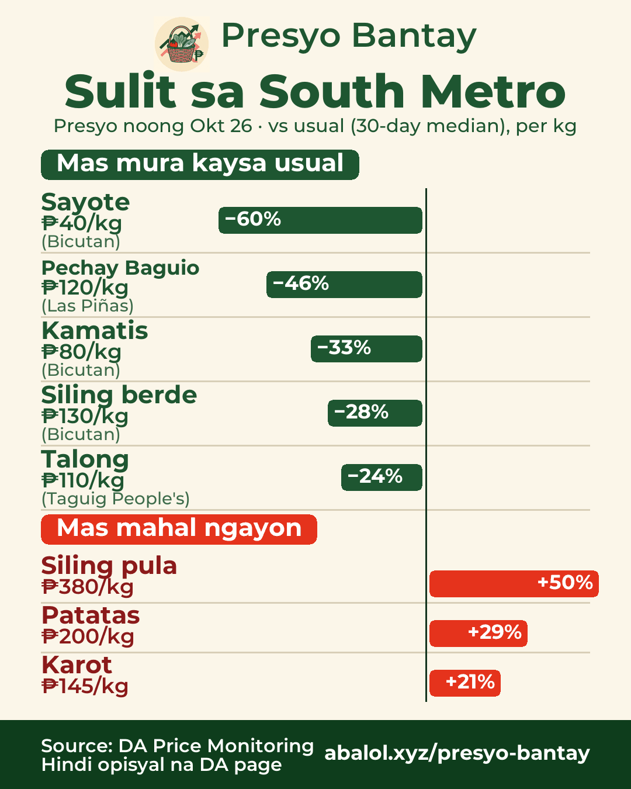
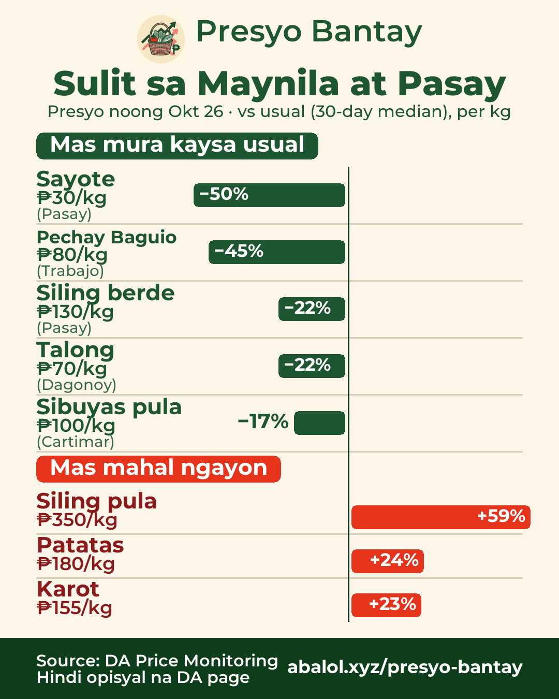
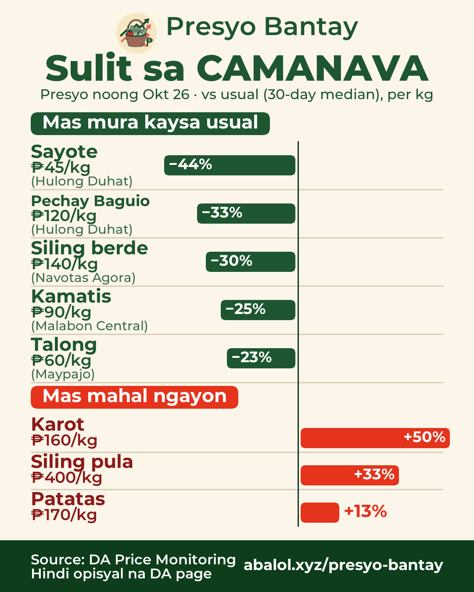
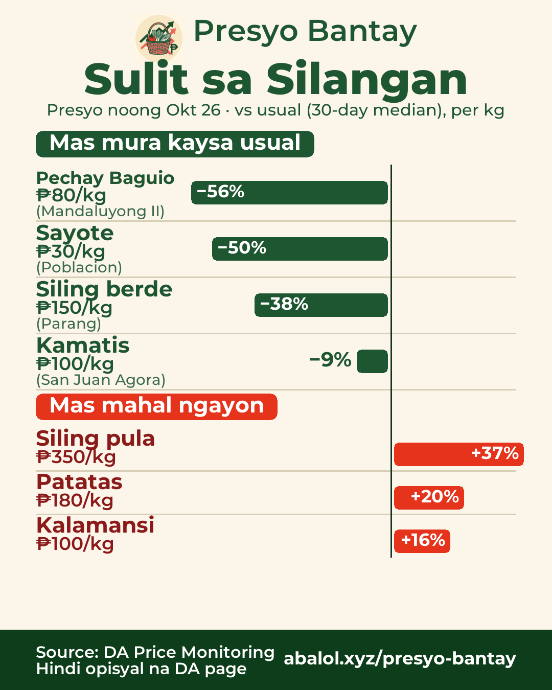

Okt 26, 2026Oct 26, 20262026年10月26日
Sulit sa palengkeMarket deals市場のお買い得
% = kumpara sa usual na presyo (30 araw)% = vs usual price (30-day)% = 30日間のいつもの価格比
South MetroSouth Metro南部（ラス・ピニャス周辺）

🛒 Sulit sa South Metro — presyo noong Okt 26
✅ Mas mura kaysa usual:
- Sayote ₱40/kg (−60%) · Bicutan
- Pechay Baguio ₱120/kg (−46%) · Las Piñas
- Kamatis ₱80/kg (−33%) · Bicutan
- Siling berde ₱130/kg (−28%) · Bicutan
- Talong ₱110/kg (−24%) · Taguig People's
⚠️ Mas mahal ngayon:
- Siling pula ₱380/kg (+50%)
- Patatas ₱200/kg (+29%)
- Karot ₱145/kg (+21%)
🇬🇧 Deals in South Metro — prices of Oct 26
✅ Chayote ₱40 (−60%), Pechay Baguio ₱120 (−46%), Tomato ₱80 (−33%), Green chili ₱130 (−28%), Eggplant ₱110 (−24%)
⚠️ Pricier: Red chili ₱380 (+50%), Potato ₱200 (+29%), Carrots ₱145 (+21%)
🇯🇵 南部（ラス・ピニャス周辺）のお買い得 — 10/26の価格
✅ サヨテ ₱40（−60%）、ペチャイ・バギオ ₱120（−46%）、トマト ₱80（−33%）、青唐辛子 ₱130（−28%）、ナス ₱110（−24%）
⚠️ 高め：赤唐辛子 ₱380（+50%）、じゃがいも ₱200（+29%）、にんじん ₱145（+21%）
Maynila at PasayManila & Pasayマニラ・パサイ

🛒 Sulit sa Maynila at Pasay — presyo noong Okt 26
✅ Mas mura kaysa usual:
- Sayote ₱30/kg (−50%) · Pasay
- Pechay Baguio ₱80/kg (−45%) · Trabajo
- Siling berde ₱130/kg (−22%) · Pasay
- Talong ₱70/kg (−22%) · Dagonoy
- Sibuyas pula ₱100/kg (−17%) · Cartimar
⚠️ Mas mahal ngayon:
- Siling pula ₱350/kg (+59%)
- Patatas ₱180/kg (+24%)
- Karot ₱155/kg (+23%)
🇬🇧 Deals in Manila & Pasay — prices of Oct 26
✅ Chayote ₱30 (−50%), Pechay Baguio ₱80 (−45%), Green chili ₱130 (−22%), Eggplant ₱70 (−22%), Red onion ₱100 (−17%)
⚠️ Pricier: Red chili ₱350 (+59%), Potato ₱180 (+24%), Carrots ₱155 (+23%)
🇯🇵 マニラ・パサイのお買い得 — 10/26の価格
✅ サヨテ ₱30（−50%）、ペチャイ・バギオ ₱80（−45%）、青唐辛子 ₱130（−22%）、ナス ₱70（−22%）、赤玉ねぎ ₱100（−17%）
⚠️ 高め：赤唐辛子 ₱350（+59%）、じゃがいも ₱180（+24%）、にんじん ₱155（+23%）
Quezon CityQuezon Cityケソン市
Walang data para sa Quezon City noong Okt 26, 2026.No data for Quezon City on Oct 26, 2026.ケソン市：2026年10月26日のデータなし。
CAMANAVANorth (CAMANAVA)北部（カマナバ）

🛒 Sulit sa CAMANAVA — presyo noong Okt 26
✅ Mas mura kaysa usual:
- Sayote ₱45/kg (−44%) · Hulong Duhat
- Pechay Baguio ₱120/kg (−33%) · Hulong Duhat
- Siling berde ₱140/kg (−30%) · Navotas Agora
- Kamatis ₱90/kg (−25%) · Malabon Central
- Talong ₱60/kg (−23%) · Maypajo
⚠️ Mas mahal ngayon:
- Karot ₱160/kg (+50%)
- Siling pula ₱400/kg (+33%)
- Patatas ₱170/kg (+13%)
🇬🇧 Deals in North (CAMANAVA) — prices of Oct 26
✅ Chayote ₱45 (−44%), Pechay Baguio ₱120 (−33%), Green chili ₱140 (−30%), Tomato ₱90 (−25%), Eggplant ₱60 (−23%)
⚠️ Pricier: Carrots ₱160 (+50%), Red chili ₱400 (+33%), Potato ₱170 (+13%)
🇯🇵 北部（カマナバ）のお買い得 — 10/26の価格
✅ サヨテ ₱45（−44%）、ペチャイ・バギオ ₱120（−33%）、青唐辛子 ₱140（−30%）、トマト ₱90（−25%）、ナス ₱60（−23%）
⚠️ 高め：にんじん ₱160（+50%）、赤唐辛子 ₱400（+33%）、じゃがいも ₱170（+13%）
SilanganEast Metro東部

🛒 Sulit sa Silangan — presyo noong Okt 26
✅ Mas mura kaysa usual:
- Pechay Baguio ₱80/kg (−56%) · Mandaluyong II
- Sayote ₱30/kg (−50%) · Poblacion
- Siling berde ₱150/kg (−38%) · Parang
- Kamatis ₱100/kg (−9%) · San Juan Agora
⚠️ Mas mahal ngayon:
- Siling pula ₱350/kg (+37%)
- Patatas ₱180/kg (+20%)
- Kalamansi ₱100/kg (+16%)
🇬🇧 Deals in East Metro — prices of Oct 26
✅ Pechay Baguio ₱80 (−56%), Chayote ₱30 (−50%), Green chili ₱150 (−38%), Tomato ₱100 (−9%)
⚠️ Pricier: Red chili ₱350 (+37%), Potato ₱180 (+20%), Calamansi ₱100 (+16%)
🇯🇵 東部のお買い得 — 10/26の価格
✅ ペチャイ・バギオ ₱80（−56%）、サヨテ ₱30（−50%）、青唐辛子 ₱150（−38%）、トマト ₱100（−9%）
⚠️ 高め：赤唐辛子 ₱350（+37%）、じゃがいも ₱180（+20%）、カラマンシー ₱100（+16%）